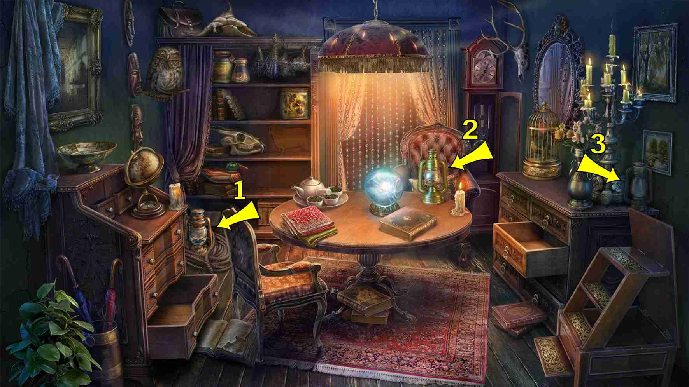

返回
Wiki
命运房间 Room_of_Fate
B半身雕像
B捕鼠器
B玻璃杯
B蝙蝠
D刀
D弹弓
D毒药
D灯
F符文
G挂锁
G鬼魂
H胡桃钳
H蝴蝶
J剪刀
J卷轴
J酒囊
J金蛋
K咖啡研磨机
L铃铛
L龙
M木鞋
M蘑菇
M马蹄铁
N念珠
P扑克牌
P苹果
Q钱包
S扇子
S手
S手套
S手提包
S树枝球
S水烟壶
S沙漏
S烧杯
S蛇
T天平
T提灯
T汤匙
W巫毒娃娃
X信封
X小提琴
X心形
Y摇铃
Y月亮
Y烟斗
Y盐
Y眼镜
Y研钵和钵杵
Y羽毛
Y钥匙
P苹果 Apple
T天平 Balance Scales
S树枝球 Ball of Twigs
B蝙蝠 Bat
S烧杯 Beaker (or Glass Flask)
Y摇铃 Bell
B半身雕像 Bust
H蝴蝶 Butterfly
P扑克牌 Cards
K咖啡研磨机 Coffee Grinder
L龙 Dragon
X信封 Envelope
Y眼镜 Eyeglasses
Y羽毛 Feather
G鬼魂 Ghost
B玻璃杯 Glass
S手套 Glove
J金蛋 Golden Eggs
S手 Hand
S扇子 Hand Fan
S手提包 Handbag
X心形 Heart
S水烟壶 Hookah
M马蹄铁 Horseshoe
S沙漏 Hourglass
L铃铛 Jingle Bells
Y钥匙 Key
D刀 Knife
D灯 Lamp

T提灯 Lantern
Y月亮 Moon
B捕鼠器 Mousetrap
M蘑菇 Mushroom
H胡桃钳 Nutcracker
G挂锁 Padlock
Y研钵和钵杵 Pestle and Mortar
Y烟斗 Pipe
D毒药 Poison
Q钱包 Purse
N念珠 Rosary
F符文 Runes
Y盐 Salt
J剪刀 Scissors
3 items:
On rug under table (right of table center)
Upper corner of bookcase next to lampshade
Left side of left bureau, near wall
J卷轴 Scroll
D弹弓 Slingshot
S蛇 Snake
T汤匙 Spoon
X小提琴 Violin
W巫毒娃娃 Voodoo Doll
J酒囊 Wineskin
M木鞋 Wooden Shoe